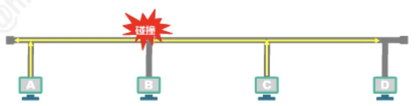
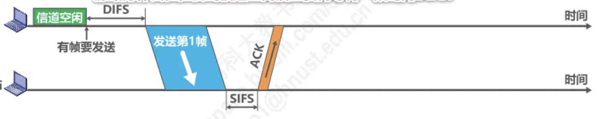
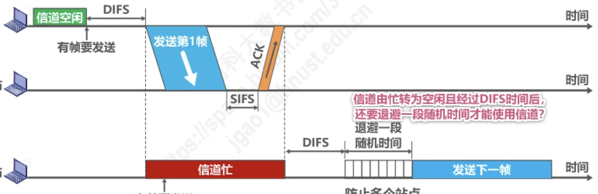
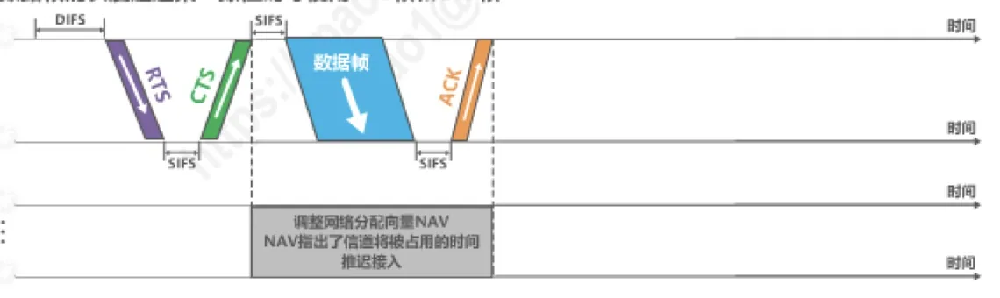
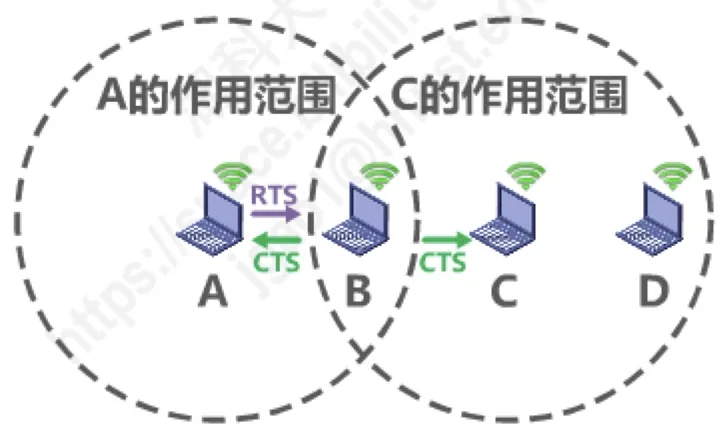

计算机通信与网络 · 第 3 章 数据链路层
3.6.4 媒体接入控制 —— 动态接入控制 —— 随机接入 —— CSMA/CA
CSMA/CD 在有线的共享式以太网上干得很成功，但把它照搬到无线局域网却行不通——无线环境下做不到碰撞检测。本节讲 802.11 无线局域网实际使用的协议：载波监听多址接入/碰撞避免 CSMA/CA。思路从「检测碰撞」改成了「尽量避免碰撞」，由此衍生出帧间间隔 IFS、退避算法、RTS/CTS 信道预约和虚拟载波监听这一整套机制。
1. 无线局域网为什么不能用 CSMA/CD
既然 CSMA/CD 协议已经成功地应用于使用广播信道的有线局域网，那么同样使用广播信道的无线局域网能不能也使用它呢？答案是：CSMA 那一半可以用，CD 那一半不行。
在无线局域网中，仍然可以使用载波监听多址接入 CSMA，即在发送帧之前先对传输媒体进行载波监听；若发现有其他站在发送帧，就推迟发送以免发生碰撞。但是不能使用碰撞检测 CD，原因有两条：
- 由于无线信道的传输条件特殊，其信号强度的动态范围非常大，无线网卡上接收到的信号强度往往会远远小于发送信号的强度（可能相差百万倍）。如果要在无线网卡上实现碰撞检测 CD，对硬件的要求非常高；
- 即使能够在硬件上实现无线局域网的碰撞检测功能，但由于无线电波传播的特殊性（存在隐蔽站问题），进行碰撞检测的意义也不大。
2. 隐蔽站问题
隐蔽站问题的情形是这样的：站点 A 和站点 C 相距较远，各自处于对方的作用范围之外，但都处于站点 B 的作用范围之内。于是：
- A 和 C 都检测不到对方的无线信号；
- A 和 C 都给 B 发送帧时，产生碰撞；
- A 和 C 都无法检测到碰撞。
这时 A 和 C 互为隐蔽站。请注意它的后果：碰撞确实发生了，但两个发送方谁也「听」不到，因此基于「边听边说」的碰撞检测在这里完全失效——即便硬件上能检测，发送方也检测不到远端的碰撞。所以无线局域网必须换一条思路：与其碰撞后检测出来，不如事先想办法避免碰撞。

3. 802.11 的 CSMA/CA 与两种接入方式
802.11 无线局域网使用 CSMA/CA（Carrier Sense Multiple Access/Collision Avoidance）协议，即在 CSMA 的基础上增加了一个碰撞避免 CA（Collision Avoidance）功能，而不再实现碰撞检测功能。
由于不可能避免所有的碰撞，并且无线信道误码率较高，802.11 标准还使用了数据链路层确认机制（停止-等待协议）来保证数据被正确接收。这一点与有线以太网形成了鲜明对照：以太网只做差错检测、把可靠传输交给上层，而无线局域网在 MAC 层就自己把确认做掉了。
802.11 的 MAC 层标准定义了两个不同的媒体接入控制方式：
- 分布式协调功能 DCF（Distributed Coordination Function）：在 DCF 方式下没有中心控制站点，每个站点使用 CSMA/CA 协议通过争用信道来获取发送权，这是 802.11 定义的默认方式；
- 点协调功能 PCF（Point Coordination Function）：PCF 方式使用集中控制的接入算法（一般在接入点 AP 实现集中控制），是 802.11 定义的可选方式，在实际中较少使用。
4. 帧间间隔 IFS
802.11 标准规定，所有的站点必须在持续检测到信道空闲一段指定时间后才能发送帧，这段时间称为帧间间隔 IFS（InterFrame Space）。帧间间隔的长短取决于该站点要发送帧的类型：
- 高优先级帧需要等待的时间较短，因此可优先获得发送权；
- 低优先级帧需要等待的时间较长。若某个站的低优先级帧还没来得及发送，而其他站的高优先级帧已发送到信道上，则信道变为忙态，因而低优先级帧就只能再推迟发送了。这样就减少了发生碰撞的机会。
常用的两种帧间间隔是：
- 短帧间间隔 SIFS（28 μs）：最短的帧间间隔，用来分隔开属于一次对话的各帧。一个站点应当能够在这段时间内从发送方式切换到接收方式。使用 SIFS 的帧类型有 ACK 帧、CTS 帧、由过长的 MAC 帧分片后的数据帧，以及所有回答 AP 探询的帧和在 PCF 方式中接入点 AP 发送出的任何帧；
- DCF 帧间间隔 DIFS（128 μs）：它比短帧间间隔 SIFS 要长得多，在 DCF 方式中用来发送数据帧和管理帧。
把这两个数字对比一下就能体会 IFS 的作用：待发的数据帧要等 128 μs，而对上一次通信的确认帧只需等 28 μs，后者显然能抢先发出，这正是「优先级」在时间上的体现。
5. CSMA/CA 的工作过程
在 DCF 方式下（图 2），一次成功的通信是这样的：源站检测到信道空闲，并且保持空闲达到 DIFS 后，发送第 1 帧；目的站正确接收该数据帧后，等待 SIFS 便向源站发回 ACK 帧；其他各站则在信道忙期间保持监听，并推迟自己的发送请求。

原讲义围绕这张图提出了三个问题，正好把三处等待时间解释清楚：
- 源站为什么在检测到信道空闲后还要再等待一段时间 DIFS？就是考虑到可能有其他的站有高优先级的帧要发送。若有，就要让高优先级帧先发送；
- 目的站为什么正确接收数据帧后还要等待一段时间 SIFS 才能发送 ACK 帧？因为 SIFS 是最短的帧间间隔，用来分隔开属于一次对话的各帧。在这段时间内，一个站点应当能够从发送方式切换到接收方式；由于 SIFS 比 DIFS 短得多，ACK 帧总能抢在其他站的新一轮争用之前发出；
- 信道由忙转为空闲且经过 DIFS 时间后，为什么还要退避一段随机时间才能使用信道？是为了防止多个站点同时发送数据而产生碰撞——前面等 DIFS 只是让高优先级帧先发，而多个同优先级的站如果都等够 DIFS 就一起发，照样会撞。

6. 退避算法的使用条件
退避不是每次都必须做的。当站点检测到信道是空闲的，并且所发送的数据帧不是成功发送完上一个数据帧之后立即连续发送的数据帧，则不使用退避算法。以下三种情况必须使用退避算法：
- 在发送数据帧之前检测到信道处于忙状态时；
- 在每一次重传一个数据帧时；
- 在每一次成功发送后要连续发送下一个帧时（这是为了避免一个站点长时间占用信道）。
7. CSMA/CA 的退避算法
执行退避算法时，站点为退避计时器设置一个随机的退避时间，然后这样使用它：
- 当退避计时器的时间减小到零时，就开始发送数据；
- 当退避计时器的时间还未减小到零而信道又转变为忙状态，这时就冻结退避计时器的数值，重新等待信道变为空闲，再经过时间 DIFS 后，继续启动退避计时器（也就是从冻结处接着倒计时，而不是重新抽签）。
退避时间本身怎么取？在进行第 i 次退避时，退避时间在时隙编号 {0, 1, …, 22+i − 1} 中随机选择一个，然后乘以基本退避时间（也就是一个时隙的长度）就可以得到随机的退避时间。这样做是为了使不同站点选择相同退避时间的概率减少。当时隙编号达到 255 时（对应于第 6 次退避）就不再增加了。
与 CSMA/CD 的截断二进制指数退避相比，这里的差别在于：CSMA/CA 的退避计数是「冻结—解冻」式的——信道上出现其他站的通信时，自己的倒计时暂停而不会被清零，等信道重新空闲并经过 DIFS 后从剩余值继续；而以太网的退避则是碰撞后重新抽一个随机时间来等待。
8. 信道预约：RTS 帧与 CTS 帧
为了尽可能减少碰撞的概率和降低碰撞的影响，802.11 标准允许要发送数据的站点对信道进行预约，办法是在发送数据帧之前先交换两个短控制帧：
- 源站在发送数据帧之前先发送一个短的控制帧，称为请求发送 RTS（Request To Send），它包括源地址、目的地址以及这次通信（包括相应确认帧）所需的持续时间；
- 若目的站正确收到源站发来的 RTS 帧，且媒体空闲，就发送一个响应控制帧，称为允许发送 CTS（Clear To Send），它也包括这次通信所需的持续时间（从 RTS 帧中将此持续时间复制到 CTS 帧中）；
- 源站收到 CTS 帧后，再等待一段时间 SIFS，就可以发送其数据帧；
- 若目的站正确收到了源站发来的数据帧，在等待时间 SIFS 后，就向源站发送确认帧 ACK。
除源站和目的站以外的其他各站，在收到 CTS 帧（或数据帧）后就要推迟接入到无线局域网中。这样就保证了源站和目的站之间的通信不会受到其他站的干扰——隐蔽站问题正是靠这一手解决的：A 虽然听不到 C 的信号，但只要收到 B 发回的 CTS 帧，就知道信道马上要被占用。

如果 RTS 帧发生碰撞，源站就收不到 CTS 帧，需执行退避算法重传 RTS 帧。由于 RTS 帧和 CTS 帧很短，发送碰撞的概率、碰撞产生的开销及本身的开销都很小。而对于一般的数据帧，其发送时延往往大于传播时延（因为是局域网），碰撞的概率很大，且一旦发生碰撞而导致数据帧重发，则浪费的时间就很多，因此用很小的代价对信道进行预约往往是值得的。
802.11 标准规定了 3 种情况供用户选择：
- 使用 RTS 帧和 CTS 帧；
- 不使用 RTS 帧和 CTS 帧；
- 只有当数据帧的长度超过某一数值时才使用 RTS 帧和 CTS 帧。
9. 虚拟载波监听与网络分配向量 NAV
除 RTS 帧和 CTS 帧会携带通信需要持续的时间之外，数据帧也能携带通信需要持续的时间，这称为 802.11 的虚拟载波监听机制。由于利用了虚拟载波监听，站点只要监听到 RTS 帧、CTS 帧或数据帧中的任何一个，就能知道信道被占用的持续时间，而不需要真正监听到信道上的信号，因此虚拟载波监听机制能减少隐蔽站带来的碰撞问题。
其他站据此调整自己的网络分配向量 NAV（Network Allocation Vector）：NAV 指出了信道将被占用的时间（「我知道信道将被占用多长时间，在这段时间内我不能发送帧」），各站在这段时间内推迟接入。落到帧结构上，就是 802.11 无线局域网的 MAC 帧首部中有一个持续期字段，用来填入在本帧结束后还要占用信道多久时间，其他站点通过该字段实现虚拟载波监听。

10. 用几道考题检验
（1）哪个 MAC 协议对正确接收的数据帧进行确认
2011 年的一道真题问：下列选项中，对正确接收到的数据帧进行确认的 MAC 协议是哪一个？答案是 CSMA/CA（选项 D）。解析如下：
- CSMA 指载波监听多址接入，并不使用确认机制；
- CSMA/CD 指载波监听多址接入/碰撞检测，是对 CSMA 的改进，是早期共享信道以太网使用的信道访问控制协议，并不使用确认机制；
- CSMA/CA 指载波监听多址接入/碰撞避免，是 802.11 局域网采用的无线信道访问控制协议。802.11 局域网在使用 CSMA/CA 的同时还使用停止-等待协议，这是因为无线信道的通信质量远不如有线信道，因此无线站点每发送完一个数据帧后，要等到收到对方的确认帧后才能继续发送下一帧；
- CDMA 指码分多址，属于静态划分信道，是物理层的信道复用技术，而不属于 MAC 协议。
（2）哪种介质访问控制方法可能发生冲突
2013 年的一道真题问：下列介质访问控制方法中，可能发生冲突的是哪一个？答案是 CSMA（选项 B）。解析：CDMA（码分多址）、TDMA（时分多址）、FDMA（频分多址）都是常见的物理层信道复用技术，属于静态划分信道，用于多用户共享信道，不会发生冲突；而 CSMA（载波监听多址接入）属于争用型的媒体接入控制协议，连接在同一媒体上的多个站点使用该协议以竞争方式发送数据帧，可能出现冲突（也称为碰撞）。
（3）CSMA/CA 进行信道预约的方法
2018 年的一道真题问：IEEE 802.11 无线局域网的 MAC 协议 CSMA/CA 进行信道预约的方法是什么？答案是 交换 RTS 与 CTS 帧（选项 D）。解析：CSMA/CA 协议使用 RTS 和 CTS 帧来预约信道，它们都携带有通信需要持续的时间；另外，除 RTS 和 CTS 帧外，数据帧也能携带通信需要持续的时间，这就是 802.11 的虚拟载波监听。
本节小结
- 无线局域网可以使用 CSMA，但不能使用 CD：一是无线信号强度动态范围极大（接收信号可能比发送信号弱百万倍），在网卡上实现碰撞检测对硬件要求非常高；二是存在隐蔽站问题——A、C 互相听不到却都给 B 发帧，碰撞发生了双方都检测不到，检测本身意义不大；
- 802.11 在 MAC 层使用 CSMA/CA，在 CSMA 基础上增加碰撞避免而不做碰撞检测；由于无法避免所有碰撞且无线信道误码率高，还使用数据链路层确认机制（停止-等待协议）保证数据被正确接收；MAC 层有两种接入方式：默认的分布式协调功能 DCF（各站争用信道）与可选的、较少使用的点协调功能 PCF（AP 集中控制）；
- 帧间间隔 IFS：所有站点必须持续检测信道空闲一段指定时间后才能发帧，发送的帧优先级越高，等待的帧间间隔越短。常用的两种为短帧间间隔 SIFS（28 μs，用于 ACK、CTS 等，最短，用于分隔一次对话的各帧）和 DCF 帧间间隔 DIFS（128 μs，用于发送数据帧和管理帧）；
- CSMA/CA 的退避算法：信道由忙转空闲并经过 DIFS 后还要退避一段随机时间；退避计时器遇到信道变忙时冻结、信道空闲并再等 DIFS 后解冻继续计时；第 i 次退避的时隙编号从 {0, 1, …, 22+i − 1} 中随机选取，时隙编号达 255（第 6 次退避）后不再增加；
- 信道预约用 RTS/CTS 两个短控制帧交换完成，RTS 碰撞则退避重传 RTS；其他站收到 CTS（或数据帧）后推迟接入；RTS/CTS/数据帧都携带通信持续的时间，这就是虚拟载波监听，其他站据此设置网络分配向量 NAV 并推迟接入，从而缓解隐蔽站带来的碰撞；
- 三种媒质访问控制方法的对比：CSMA/CD 用于早期共享式以太网（不确认）、CSMA/CA 用于 802.11 无线局域网（有确认、有预约）、CDMA/TDMA/FDMA 属于静态划分信道的物理层复用技术，不会发生冲突。